こんにちは Security & Compliance サポートチームです。
この記事では、Microsoft Defender for Endpoint(MDE) を使用する Windows マシンでデバイスコントロール機能を使用してリムーバブルメディアアクセスを制御する方法を紹介します。
なお、本記事の内容は、2024 年 1 月 24 日時点で最新の情報を元に作成いたしております。
また、本記事の手順はすべて Windows 11 23H2 にて動作確認を実施しております。
デバイスコントロール機能に関する最新情報については、Microsoft Learn をご参照ください。
本記事の内容
- リムーバブルメディアアクセス制御の概要
- グループポリシーを使用してリムーバブルメディアアクセス制御を構成する
- Intune の OMA-URI を使用してリムーバブルメディアアクセス制御を構成する
- Intune のユーザインターフェースを使用してリムーバブルメディアアクセス制御を構成する
- デバイスコントロールグループを XML ファイルで構成する
- リムーバブルメディアアクセス制御を XML ファイルで構成する
- グループポリシーまたは Intune の OMA-URI を使用してアクセス制御を構成するサンプルシナリオ
- リムーバブルメディアアクセス制御に関するよくある質問
リムーバブルメディアアクセス制御の概要
リムーバブルメディアアクセス制御とは
MDE を利用する Windows マシンでデバイスコントロール機能を利用することで、リムーバブルメディアへのアクセス制御が可能です。
リムーバブルメディアへのアクセス制御を構成することで、USB フラッシュメモリや CD/DVD、WPAD 端末など、さまざまなリムーバブルメディアに対して読み取り、書き込みまたは実行アクセスの監査やブロックを行うことが可能です。
リムーバブルメディアアクセス制御の前提要件
下記公開情報に記載の通り、リムーバブルメディアアクセス制御は本記事執筆時点(2024 年 1 月) では、Windows 10 / 11 および macOS 11(Big Sur) 以降での利用をサポートしています。
参考情報：Microsoft Defender for Endpointのデバイス制御 | Microsoft Learn
リムーバブルメディアアクセス制御の設定方法
Windows マシンの場合、リムーバブルメディアアクセス制御機能はグループポリシーまたは Intune で構成することができます。
Intune を使用して管理する場合は、OMA-URI および XML ファイルを使用する方法と、Intune ユーザー インターフェイスを使用する方法のいずれか一方にて設定を行うことができます。
リムーバブルメディアアクセス制御の設定を複数のサービスで管理することは非推奨の構成にあたるため、設定を行う場合はいずれか 1 つの方法を選択してください。
参考情報：グループ ポリシーを使用してリムーバブルメディアアクセス制御を展開および管理する | Microsoft Learn
参考情報：Intune を使用してリムーバブルメディアアクセス制御を展開および管理する | Microsoft Learn
リムーバブルメディアアクセス制御の設定方法を選択する
Windows マシンのリムーバブルメディアアクセス制御は以下のいずれかの方法で構成できます。
グループポリシー
Intune(OMA-URI)
Intune(ユーザインタフェース)
グループポリシーまたは Intune(OMA-URI) を使用する場合は、制御対象となるリムーバブルメディアなどを指定するデバイスコントロールグループを指定する XML ファイルと、デバイスコントロールグループに対するアクセス制御ポリシーを記述する XML ファイルをそれぞれ作成し、端末にポリシーとして配布する必要があります。
グループポリシーまたは Intune(OMA-URI) でリムーバブルメディアアクセス制御を行う際に作成する必要がある XML ファイルについては、リムーバブルメディアアクセス制御を XML ファイルで構成する の項の記載を参照してください。
一方で、Intune(ユーザインタフェース)を使用する場合は Intune ポータル上のポリシー構成画面から GUI にてリムーバブルメディアアクセス制御を構成できます。
そのため、Intune(ユーザインタフェース)を使用する場合は XML ファイルの作成は不要です。
※ リムーバブルメディアアクセス制御の設定を複数のサービスで管理することは非推奨の構成にあたるため、設定を行う場合はいずれか 1 つの方法を選択してください。
グループポリシーを使用してリムーバブルメディアアクセス制御を構成する
グループポリシーを使用するための事前準備
グループポリシーを使用してデバイスコントロール機能のリムーバブルメディアアクセス制御を実施する場合、現在ご利用中の管理用テンプレートにデバイスコントロール機能の設定項目が含まれているかどうか事前に確認する必要があります。
デバイスコントロール機能は、Windows 10 の既定の管理用テンプレートなどを利用する環境では、既定で設定を変更することができません。
そのため、Active Directory やローカルグループポリシーを使用してデバイスコントロール機能の設定を行う場合には、必ず事前に以下の 2 つの設定項目が存在していることを確認してください。
[Microsoft Defender ウイルス対策]>[機能]
[Microsoft Defender ウイルス対策]>[デバイス制御]
以下は Administrative Templates (.admx) for Windows 11 2022 Update (22H2) - v3.0 として配布している管理用テンプレートを使用してセントラル ストアの admx および adml を更新済みの環境でグループポリシーエディタを起動した画面です。
このように [Microsoft Defender ウイルス対策] 内に [機能] と [デバイス制御] の設定項目がそれぞれ表示されている場合には、デバイスコントロール機能のリムーバブルメディアアクセス制御をグループポリシーで構成することが可能です。
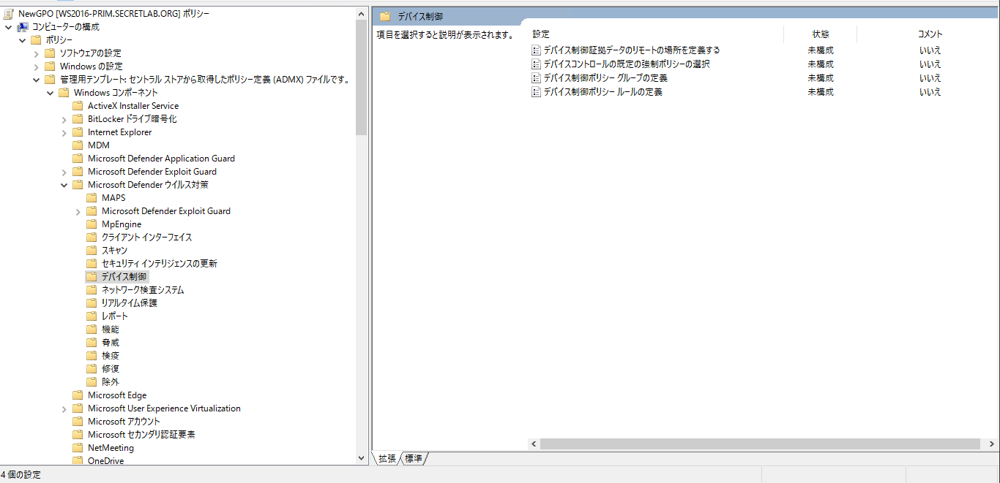
参考情報：セントラル ストアの作成と管理 - Windows Client | Microsoft Learn
参考情報：グループ ポリシーを使用してデプロイする | Microsoft Learn
グループポリシーでデバイスコントロール機能を有効化する
グループポリシーエディタ上でデバイスコントロール機能に対応する設定項目が存在することを確認したら、**[Microsoft Defender ウイルス対策]>[機能]>[デバイス制御]** の設定項目を有効化します。
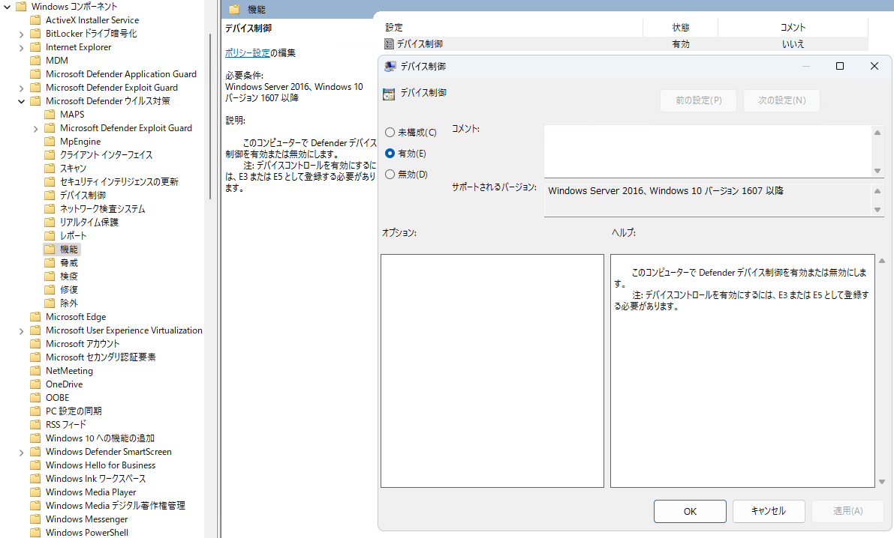
端末でデバイスコントロール機能が有効化されているかどうかを確認したい場合、PowerShell で Select-Object DeviceControlState を実行し、出力結果が Enabled となることを確認してください。
1 | PS> Get-MpComputerStatus | Select-Object DeviceControlState |
グループポリシーで既定の処理を構成する
必要に応じて、**[Microsoft Defender ウイルス対策]>[デバイス制御]>[デバイスコントロールの既定の強制ポリシーの選択]** からデバイスコントロール機能の既定の処理を構成することが可能です。
既定の処理を [拒否] とした場合、ポリシーによって明示的に許可されていない操作がデバイスコントロール機能によってブロックされます。
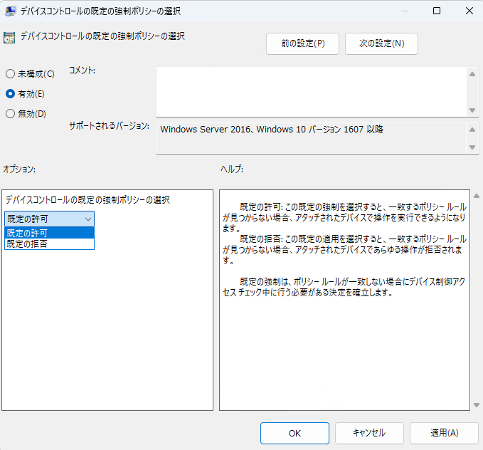
端末に適用されているデバイスコントロール機能の既定の処理は Get-MpComputerStatus | Select-Object DeviceControlDefaultEnforcement を PowerShell で実行することで確認できます。
本記事執筆時点で最新の WIndows 11 デバイスでは、上記の設定が未構成の場合にはデバイスコントロール機能の既定の処理は [許可(DefaultAllow)] が設定されています。
1 | PS> Get-MpComputerStatus | Select-Object DeviceControlDefaultEnforcement |
なお、この設定はリムーバブルメディアアクセス制御を含むすべてのデバイスコントロール機能に対する設定であるため、既定の処理を [拒否] とした場合にはデバイスコントロール機能のプリンター保護機能の動作にも影響する点に注意が必要です。
そのため、リムーバブルメディアアクセスに対してのみ既定の処理を構成したい場合には、[デバイスコントロールの既定の強制ポリシーの選択] の設定は未構成のままとし、後述する シナリオ 1 - カスタムポリシーで既定のアクセス拒否ポリシーを構成する の手順でリムーバブルメディアアクセス制御ポリシーにて既定の動作を定義します。
organizationでプリンターがブロックされるのはなぜですか?
既定の適用設定は、すべてのデバイスコントロールコンポーネントに対するものです。
つまり、 Deny設定すると、すべてのプリンターもブロックされます。
プリンターを明示的に許可するカスタム ポリシーを作成するか、既定の適用ポリシーをカスタム ポリシーに置き換えることができます。
参考情報：organizationでプリンターがブロックされるのはなぜですか? | Microsoft Learn
グループポリシーでデバイスコントロールグループを構成する
グループポリシーでリムーバブルメディアアクセス制御を構成する際に必要なデバイスコントロールグループは、**[Microsoft Defender ウイルス対策]>[デバイス制御]>[デバイス制御ポリシーグループの定義]** から設定できます。
このポリシーでは、デバイスコントロールグループの設定を記述した XML ファイルが存在するネットワークファイル共有の UNC パス、またはローカルファイルのフルパスを指定します。
設定を適切に反映するためには、デバイスコントロール機能を利用する端末がネットワークファイル共有の UNC パス、またはローカルファイルのフルパスから XML ファイルをロードできる必要があります。
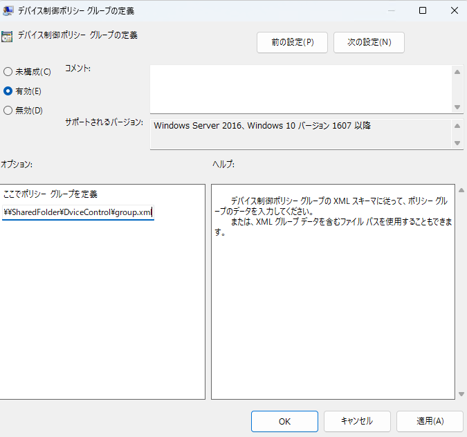
デバイスコントロールグループの設定を記述するための XML ファイルの作成方法については、後述する デバイスコントロールグループを XML ファイルで構成する および、グループポリシーまたは Intune の OMA-URI を使用してアクセス制御を構成するサンプルシナリオ の記載を参照してください。
グループポリシーでアクセス制御ポリシーを構成する
グループポリシーでリムーバブルメディアアクセス制御を構成する際に必要なアクセス制御ポリシーは、**[Microsoft Defender ウイルス対策]>[デバイス制御]>[デバイス制御ポリシールールの定義]** から設定できます。
こちらも同じく、アクセス制御ポリシーの設定を記述した XML ファイルが存在するネットワークファイル共有の UNC パス、またはローカルファイルのフルパスを指定します。
設定を適切に反映するためには、デバイスコントロール機能を利用する端末がネットワークファイル共有の UNC パス、またはローカルファイルのフルパスから XML ファイルをロードできる必要があります。
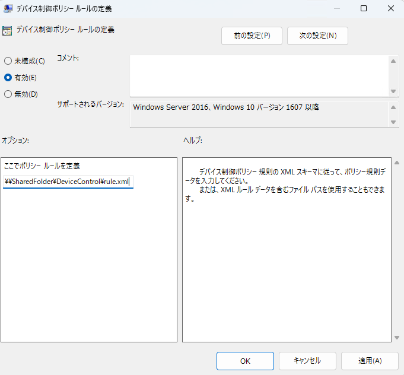
アクセス制御ポリシーの設定を記述するための XML ファイルの作成方法については、後述する リムーバブルメディアアクセス制御を XML ファイルで構成する および、グループポリシーまたは Intune の OMA-URI を使用してアクセス制御を構成するサンプルシナリオ の記載を参照してください。
デバイスコントロールの設定状況とポリシーの更新有無を確認する
デバイスコントロール機能の設定内容が反映されているか否かの確認のためには、以下の PowerShell コマンドレットを使用できます。
1 | PS> Get-MpComputerStatus | Select-Object DeviceControlState,DeviceControlDefaultEnforcement,DeviceControlPoliciesLastUpdated |
デバイスコントロール機能が正常に有効化されている場合には、DeviceControlState の値が Enabled になります。
また、デバイスコントロールグループおよびアクセス制御ポリシーの情報が反映された場合には、DeviceControlPoliciesLastUpdated に表示される時刻が更新されます。
Intune の OMA-URI を使用してリムーバブルメディアアクセス制御を構成する
Intune の OMA-URI でデバイスコントロール機能を有効化する
MDE にオンボード済みの Windows マシンを Intune に登録したら、[デバイス]>[構成プロファイル] から新規プロファイルを作成し、プラットフォームを [Windows 10 以降]、プロファイルの種類を [テンプレート] として、カスタム構成プロファイルを選択します。
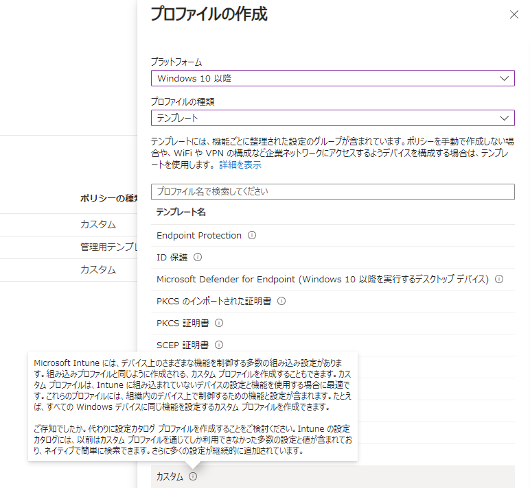
作成する構成プロファイルに、Enable_DeviceControl などの任意の名前を設定した後、[構成設定] 画面で ./Vendor/MSFT/Defender/Configuration/DeviceControlEnabled という OMA-URI を追加し、データ型を [整数]、値を 1 とします。
この設定によって、マシンでデバイスコントロール機能を有効化できます。
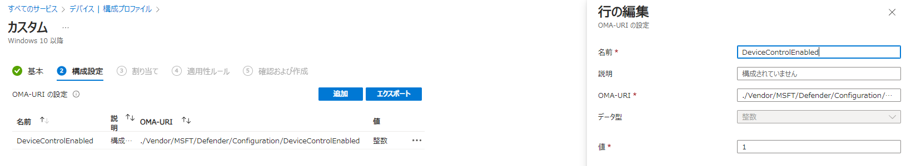
参考情報：Microsoft Intuneを使用してMicrosoft Defender for Endpointでデバイス制御をデプロイおよび管理する | Microsoft Learn
Intune の OMA-URI で既定の処理を構成する
同じ構成プロファイルで ./Vendor/MSFT/Defender/Configuration/DefaultEnforcement の OMA-URI を追加することで、デバイスコントロール機能の既定の処理を変更することができます。
データ型を [整数] とし、既定の処理を [許可] に設定する場合は 1 を、[拒否] に変更する場合は 2 を設定します。
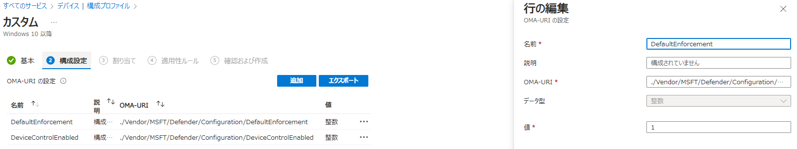
なお、グループポリシーで設定する場合と同じく、既定の処理の設定はリムーバブルメディアアクセス制御を含むすべてのデバイスコントロール機能に対する設定であるため、既定の処理を [拒否] とした場合にはデバイスコントロール機能のプリンター保護機能の動作にも影響する点に注意が必要です。
Intune の OMA-URI でデバイスコントロールグループを構成する
Intune の OMA-URI を使用する場合も、グループポリシーで設定する場合と同じく XML ファイルでデバイスコントロールグループとアクセス制御ポリシーを設定します。
ただし、Intune の OMA-URI でデバイスコントロールグループを構成する場合、1 つのグループごとに 1 つの OMA-URI を割り当てる必要があります。
参考情報：OMA-URI を使用したグループの作成 | Microsoft Learn
この項では、シナリオ 4 - 特定のユーザに対してアクセスを許可する のサンプルポリシーを Intne の OMA-URI で設定する手順を紹介します。
このサンプルシナリオで使用する OMA-URI 用の XML ファイルは、以下の公開リポジトリからダウンロード可能です。
参考情報：Getting Started/Intune OMA-URI
デバイスコントロールグループの設定のため、以下の 3 つの XML ファイルを使用します。
all_removable_media_devices{d8819053-24f4-444a-a0fb-9ce5a9e97862}.xml
1 | <Group Id="{d8819053-24f4-444a-a0fb-9ce5a9e97862}" Type="Device"> |
authorized_usbs{368a2c82-17be-4137-bffa-370bbdff9672}.xml
1 | <Group Id="{368a2c82-17be-4137-bffa-370bbdff9672}" Type="Device"> |
readonly_usbs{23c24566-98a5-4218-8802-59614513b97e}.xml
1 | <Group Id="{23c24566-98a5-4218-8802-59614513b97e}" Type="Device"> |
Intune の OMA-URI でデバイスコントロールグループを定義する場合、1 つのグループごとに ./Vendor/MSFT/Defender/Configuration/DeviceControl/PolicyGroups/%7b[GroupId]%7d/GroupData のような OMA-URI を作成し、グループの定義を含む XML ファイルをアップロードします。
[GroupId] の箇所は構成するデバイスコントロールグループの GroupID に置き換えます。
例えば、上記のサンプルファイル all_removable_media_devices{d8819053-24f4-444a-a0fb-9ce5a9e97862}.xml を使用する場合は、以下の ./Vendor/MSFT/Defender/Configuration/DeviceControl/PolicyGroups/%7Bd8819053-24f4-444a-a0fb-9ce5a9e97862%7D/GroupData という OMA-URI を追加します。
この時、[データ型] は [文字列(XML ファイル)] を選択し、Group 要素を 1 つ含むファイルをアップロードします。
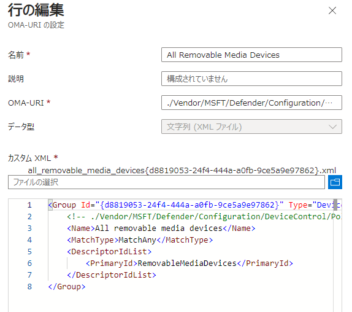
上記と同様の手順で Authorized USBs と Read Only USBs のグループを定義する OMA-URI も追加します。
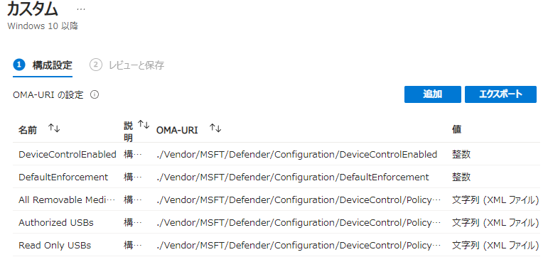
グループの XML を適用する前に、InstancePathId や VID_PID の指定する値をユーザが利用するメディアの情報に置き換えてください。
また、特にデバイスインスタンスパスを使用して明示的にデバイスを指定する場合には、XML ファイル内で & をエスケープ文字 & に置き換える必要がある点に注意してください。
Intune の OMA-URI でアクセス制御ポリシーを構成する
デバイスコントロールグループの OMA-URI を追加したので、次はこれらのグループと対応するアクセス制御ポリシーを登録します。
アクセス制御ポリシーを登録する場合も、1 つの PolicyRule ごとに 1 つの OMA-URI を登録する必要があります。
グループポリシー用の XML ファイルとは異なり、PolicyRules 要素にて複数の PolicyRule をまとめて記述することができない点に注意が必要です。
このサンプルシナリオで使用する OMA-URI 用のポリシー XML ファイルは、以下の公開リポジトリからダウンロード可能です。(ファイル名が step_4 から始まるものを使用します。)
参考情報：Getting Started/Intune OMA-URI
アクセス制御ポリシーの設定のため、以下の XML ファイルを使用します。
step_4_-_deny_all_other_usbs{7beca8fe-313a-46f2-a090-399eb3d74318}.xml
1 | <PolicyRule Id="{7beca8fe-313a-46f2-a090-399eb3d74318}" > |
step_4_-_allow_access_to_writeable_usbs_for_some_users{a054bbcf-3454-4b95-9058-f7ed00deeee9}.xml
1 | <PolicyRule Id="{a054bbcf-3454-4b95-9058-f7ed00deeee9}" > |
step_4_-_allow_read_only_access_to_read_only_usbs_for_some_users{b2b9cfc0-799d-457c-babc-da617d9a8b83}.xml
1 | <PolicyRule Id="{b2b9cfc0-799d-457c-babc-da617d9a8b83}" > |
アクセス制御ポリシーを登録する場合、./Vendor/MSFT/Defender/Configuration/DeviceControl/PolicyRules/%7b[PolicyRule Id]%7d/RuleData のような OMA-URI を作成し、1 つの PolicyRule を記述した XML ファイルをアップロードします。
OMA-URI の [PolicyRule Id] の箇所は、適用する PolicyRule の ID に置き換える必要があります。
例えば、サンプルポリシーの step_4_-_allow_access_to_writeable_usbs_for_some_users{a054bbcf-3454-4b95-9058-f7ed00deeee9}.xml を使用して OMA-URI を登録する場合には、./Vendor/MSFT/Defender/Configuration/DeviceControl/PolicyRules/%7Ba054bbcf-3454-4b95-9058-f7ed00deeee9%7D/RuleData というパスを指定します。
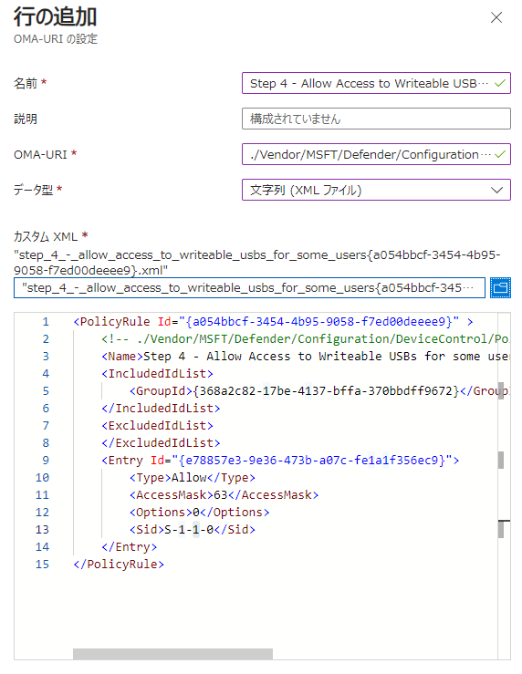
すべての設定が完了したら、カスタム構成プロファイルを保存し、任意のデバイスやユーザに割り当てます。
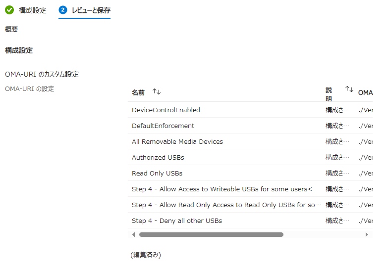
割り当てされたポリシーが端末に配信されると、デバイスコントロール機能が有効化され、端末にアクセス制御ポリシーが適用されます。
ポリシーが反映されたことを確認したい場合は PowerShell で Get-MpComputerStatus | Select-Object DeviceControlState,DeviceControlDefaultEnforcement,DeviceControlPoliciesLastUpdated を実行し、DeviceControlPoliciesLastUpdated の時刻が更新されていることを確認します。
Intune のユーザインターフェースを使用してリムーバブルメディアアクセス制御を構成する
Intune を使用する場合、カスタム構成プロファイルではなく [エンドポイントセキュリティ]>[攻撃面の減少] からデバイスコントロールプロファイルを作成することでもリムーバブルメディアのアクセス制御ポリシーを構成できます。
参考情報：Intune でデバイス制御を構成および管理する | Microsoft Learn
例えば、以下の手順ですべてのリムーバブルメディアに対してアクセス拒否ポリシーを構成できます。
- まず、[エンドポイントセキュリティ]>[攻撃面の減少] の [再利用可能な設定] から [リムーバブル記憶域] のインスタンスを追加し、[PrimaryId] を [RemovableMediaDevices] に設定します。
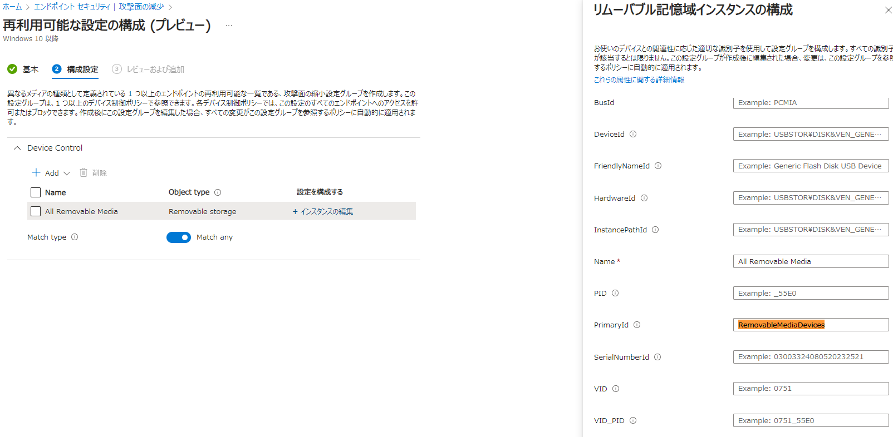
- 次に、[エンドポイントセキュリティ]>[攻撃面の減少] からデバイスコントロールプロファイルを作成し、[Device Control] のトグルを [構成されました] の状態に変更して [Included ID] に [再利用可能な設定] で作成したリムーバブルメディアグループを登録します。
- 続けて、以下の画面のように [+ Edit Entry] からリムーバブルメディア制御ポリシーを設定することで、デバイスに対するアクセス拒否を構成できます。
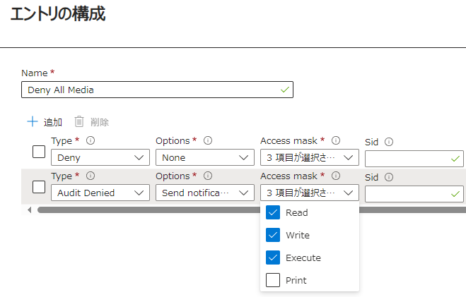
Intune のユーザインタフェースによるリムーバブルメディアアクセス制御ポリシーの設定項目については以下の公開情報の記載を参照してください。
参考情報：Device control policies in Microsoft Defender for Endpoint | Microsoft Learn
デバイスコントロールグループを XML ファイルで構成する
グループポリシーまたは Intune の OMA-URI を使用してリムーバブルメディアアクセス制御を構成する場合、まずは制御対象となるデバイスやリムーバブルメディアをデバイスコントロールグループとして定義する必要があります。
デバイスコントロールグループの定義に関する最新の情報は以下の公開情報を参照してください。
参考情報：Device control policies in Microsoft Defender for Endpoint | Microsoft Learn
グループポリシーを使用する場合、デバイスコントロールグループの XML ファイルは 、要素 Groups の中に 1 つ以上の Group を定義する構造となっています。つまり、1 つの XML ファイル内に複数の Group の定義を統合できます。
一方で、Intune の OMA-URI を使用する場合、要素 Groups は使用せず、1 つの Group ごとに 1 つの OMA-URI を使用します。
各 Group には Id 属性として GroupID を指定する必要があります。ここで使用可能な ID は、PowerShell で New-Guid コマンドレットを実行することでランダムに生成することが可能です。
参考情報：Microsoft Defender for Endpoint デバイス コントロールリムーバブル ストレージに関してよく寄せられる質問 | Microsoft Learn
PrimaryId によるデバイスの指定
各 Group 要素には、グループ名や GroupID を記述できます。GroupID は後述するアクセス制御ポリシーの対象を指定するために使用します。
Group 内では、MatchType と DescriptorIdList によりグループの対象となるデバイスのプロパティを定義します。
例えば、MatchType が MatchAny に設定されている場合は、DescriptorIdList 内の要素を OR リレーションシップで評価することを意味しています。
つまり、DescriptorIdList 要素内で定義されたいずれかの条件に合致するデバイスが存在する場合、対象のデバイスがそのグループの対象となることを意味します。
DescriptorIdList 要素内で利用できる設定値として PrimaryId があります。
PrimaryId に RemovableMediaDevices を指定する場合、すべての RemovableMediaDevices(USB フラッシュメモリや USB 接続の外付け SSD など) を対象とする グループを定義することがきできます。
InstancePathId と VID_PID によるデバイスの指定
グループの対象となるデバイスの条件を記述できる DescriptorIdList では、 PrimaryId 以外にも InstancePathId や VID_PID などを利用できます。
InstancePathId は、デバイスインスタンスパスを利用して対象のデバイスを明示的に指定します。(InstancePathId の指定にはワイルドカードを使用することもできます。)
これは、特に USB フラッシュメモリなどの DiskDrive を指定するシナリオで使用できます。
なお、InstancePathId を指定する場合には、もともとのデバイスインスタンスパスに含まれる & をエスケープ文字 & に置き換えて XML に記述する必要があります。
VID_PID も同じく、特に USB フラッシュメモリなどの DiskDrive を指定するシナリオで使用できます。
VID_PID による指定は、 Vendor ID と Product ID のペアで記述されます。Product ID 部分についてはについてはワイルドカードもサポートしています。
参考情報：標準 USB 識別子 - Windows drivers | Microsoft Learn
その他のデバイスコントロールグループの指定方法
デバイスコントロールグループに含めるためのデバイスの指定は、上記のサンプル以外にも様々な条件で記述できます。
例えば、USB フラッシュメモリや USB 接続の外付け SSD などのリムーバブルメディアの場合、FriendlyNameId / PrimaryId / VID_PID / BusId / DeviceId / HardwareId / InstancePathId / SerialNumberId / PID / VID などの様々な値をデバイスの指定に使用できます。
特定のリムーバブルメディアの識別に使用できる値は、Windows デバイスマネージャや Microsoft Defender の Advanced Hunting クエリなどを使用して調査できます。
| XML 内で使用するプロパティ | デバイスマネージャー上のプロパティ | サンプル KQL の実行結果 |
|---|---|---|
| FriendlyNameId | フレンドリ名 | MediaName |
| InstancePathId | デバイスインスタンスパス | DeviceId |
| SerialNumberId | デバイスインスタンスパス から確認可能 |
Serial Number |
| PID | 親 から確認可能 |
ProductId |
| VID | 親 から確認可能 |
VendorId |
なお、Advanced Hunting で USB メディアの情報を調査するためには以下のような KQL クエリを使用できます。
1 | DeviceEvents |
より詳細な情報については以下の公開情報を参照してください。
参考情報：Device control policies in Microsoft Defender for Endpoint | Microsoft Learn
リムーバブルメディアアクセス制御を XML ファイルで構成する
制御対象となるデバイスやリムーバブルメディアをデバイスコントロールグループとして定義したら、各グループを対象とするアクセス制御ポリシーを作成します。
アクセス制御ポリシーの定義に関する最新の情報は以下の公開情報を参照してください。
参考情報：Device control policies in Microsoft Defender for Endpoint | Microsoft Learn
グループポリシーを使用する場合に使用するアクセス制御ポリシーの XML ファイルは、要素 PolicyRules の中に 1 つ以上の PolicyRule を定義する構造になっています。つまり、1 つの XML ファイル内に複数の PolicyRule の定義を統合できます。
一方で、Intune の OMA-URI を使用する場合、要素 PolicyRules は使用せず、1 つの PolicyRule ごとに 1 つの OMA-URI を使用します。
各 PolicyRule には Id 属性として PolicyRuleID を指定する必要があります。
※ ここで使用可能な ID は、デバイスコントロールグループと同じく PowerShell で New-Guid コマンドレットを実行することでランダムに生成することが可能です。
PolicyRule 要素の中には、IncludedIdList 、ExcludedIdList、Entry 要素などを記述します。
Entry 要素には、具体的なアクセス制御ポリシーの定義を記述します。
一方で、IncludedIdList や ExcludedIdList には、デバイスコントロールグループの XML で定義した Group 要素の GroupID を含めることができます。
これによって、各 PolicyRule 要素では、IncludedIdList で指定されたグループに対して Entry 要素で定義したアクセス制御ポリシーが適用されるようになります。( ExcludedIdList で指定された GroupID のオブジェクトはアクセス制御ポリシーの対象外になります。)
ディスクレベルで読み書き実行を拒否する
アクセス制御ポリシーでは、PolicyRule 要素の中に記述する Entry 要素にて詳細なアクセス許可や拒否を定義できます。
例えば、Entry 要素の Type が Deny、AccessMask に 7 が指定されている場合、ポリシーの対象となるグループに含まれるすべてのリムーバブルメディアに対して、DiskLevel での読み取り、書き込み、実行アクセスを拒否します。
このように、Windows マシンのリムーバブルメディアアクセス制御を行う場合、制御ポリシーは Type と AccessMask の組み合わせで定義されます。(Options 要素の設定値の意味は Type 要素の値によって変わります。)
まず、Type には、Allow または Deny および AuditAllowed または AuditDenied の 4 つのいずれかを指定できます。
Allow が指定されている場合には、AccessMask 要素の指定に従ってメディアへのアクセスが「許可」されます。
一方で、Deny が指定されている場合には、AccessMask 要素の指定に従ってメディアへのアクセスが「拒否」されます。
AuditAllowed または AuditDenied については、それぞれ Allow か Deny の動作に対応して通知やイベント送信を行うかどうかを指定できます。
AccessMask 要素では、ディスクレベルもしくはファイルシステムレベルでメディアに対する Read, Write, Execute の操作をそれぞれ指定できます。
例えば、AccessMask が 7 で Type がDenyの場合には、ディスクレベルでの Read, Write, Execute 操作をすべて拒否する設定が適用されます。
リムーバブルメディアアクセス制御ポリシーで使用できる AccessMask については以下の表を参照してください。
| アクセス制御 | AccessMask |
|---|---|
| DiskLevel の読み取りアクセス | 1 |
| DiskLevel の書き込みアクセス | 2 |
| DiskLevel の実行アクセス | 4 |
| FIleSystemLevel の読み取りアクセス | 8 |
| FIleSystemLevel の書き込みアクセス | 16 |
| FIleSystemLevel の実行アクセス | 32 |
また、一般的に使用されるアクセス制御を構成するために使用する AccessMask については以下におまとめします。
| アクセス制御 | AccessMask |
|---|---|
| DiskLevel の読み、書き、実行アクセス | 7 (1 + 2 + 4) |
| FileSystemLevel の読み、書き、実行アクセス | 56 (8 + 16 + 32) |
| FileSystemLevel と DiskLevel の読み、書き、実行アクセス(フルアクセス) | 63 (7 + 56) |
| DiskLevel + FileSystemLevel の読み取りアクセスのみ | 9 (1 + 8) |
| DiskLevel + FileSystemLevel の読み取り、書き込みアクセスのみ | 27 (9 + 18) |
アクセス制御ポリシーに関するより詳細な情報については以下の公開情報を参照してください。
参考情報：Understand mask access (Windows) | Microsoft Learn
SID を指定して読み取りと書き込みアクセス許可を構成する
ルールの Entry には、Sid や ComputerSid などの、より詳細な条件を定義可能な要素を含めることが可能です。
例えば、ルールの Entry に Sid 要素を追加し、特定のローカルユーザの SID を記述した場合には、その SID を持つユーザにのみリムーバブルメディアへのアクセスを許可を構成することが可能です。
例えば、以下のクエリを使用することで、 Microsoft Defender ポータルから Advanced Hunting にてログインユーザの SID を取得することができます。
1 | DeviceLogonEvents |
また、AD ユーザや AD グループの SID については、ドメインコントローラにて Get-ADUser や Get-ADGroup コマンドレットを利用する方法などで調査できます。
ローカルユーザやローカルグループについては、一例として以下のコマンドで確認できます。
1 |
|
汎用的な SID については 既知の SID の情報を参照してください。
また、その他、 Entry 要素で構成可能な項目の詳細は以下の公開情報を参照してください。
参考情報：Device control policies in Microsoft Defender for Endpoint | Microsoft Learn
Advanced Hunging でリムーバブルメディアアクセス制御イベントを確認する
実際にこのポリシーを適用し、許可していないリムーバブルメディアデバイスへのアクセスがブロックされることを確認します。
既定の構成では、このポリシーによってリムーバブルメディアへのアクセスがブロックされた場合、Windows セキュリティアプリからポップアップ通知が行われます。
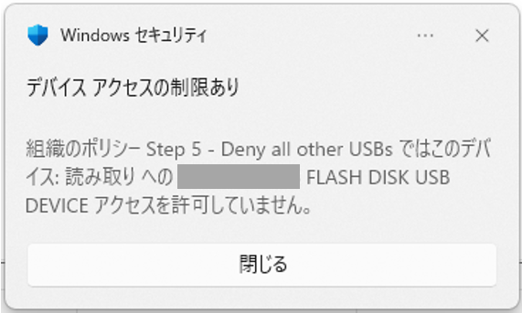
また、Microsoft Device ポータルの [高度な追及] から、以下の Advanced Hunging クエリを発行することで、アクセス制御ポリシーによってブロックされた端末やリムーバブルメディアの詳細情報などを確認することができます。
1 | DeviceEvents |
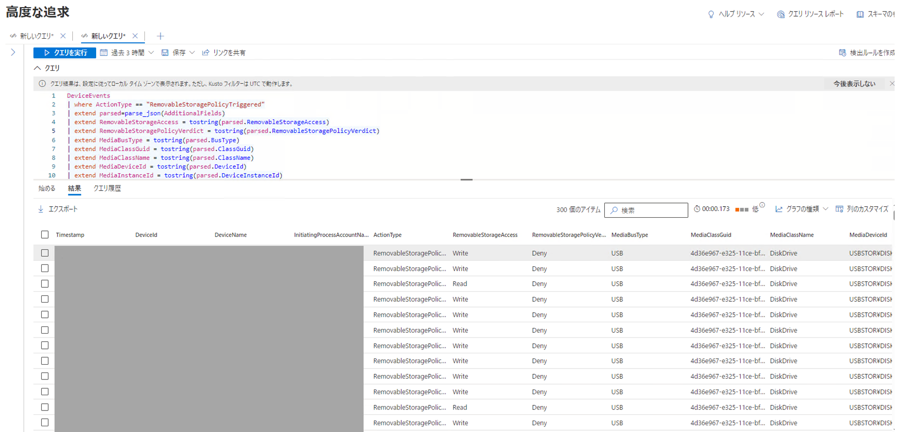
参考情報：Device control walkthroughs | Microsoft Learn
グループポリシーまたは Intune の OMA-URI を使用してアクセス制御を構成するサンプルシナリオ
この項では、公開されているサンプルポリシーを使用してリムーバブルメディアアクセス制御を構成する方法を紹介します。
なお、以下で引用するサンプル XML ファイルは、グループポリシー用のサンプルファイルである点に留意してください。
デバイスコントロールグループやアクセス制御ポリシーの記述方法はグループポリシーと Intune の OMA-URI を利用する場合で共通ですが、Intune の OMA-URI を使用する場合には、1 つのデバイスコントロールグループやアクセス制御ポリシーごとに 1 つの OMA-URI を作成する必要がある点に注意してください。
シナリオ 1 - カスタムポリシーで既定のアクセス拒否ポリシーを構成する
このサンプルポリシーのファイルは、以下の Github リポジトリからダウンロード可能です。
参考情報：Device control policy sample: Step 1 - Deny all access
ここで紹介するサンプル XML にてデバイスコントロールグループとアクセス制御ポリシーを記述することで、すべての RemovableMediaDevices に対してシステムレベルのアクセス拒否を構成することが可能です。
以下の XML では、すべてのリムーバブルメディアデバイスを対象とするデバイスコントロールグループを定義しています。
プロパティ名 MatchType に MatchAny が指定されている場合、続く DescriptorIdList プロパティ内で定義された属性は OR で比較されます。
つまり、端末に接続したデバイスが DescriptorIdList プロパティ内で定義したいずれかの条件に合致した場合に、その端末は GroupID {d8819053-24f4-444a-a0fb-9ce5a9e97862} を持つこのグループに含まれると判定されます。
1 | <Groups> |
上記のデバイスコントロールグループでは、PrimaryId が RemovableMediaDevices であるデバイスすべてを対象としています。
このようなデバイスには、USB フラッシュメモリや USB 接続の外付け SSD などが含まれます。
参考情報：グループの設定 | Microsoft Learn
次に、以下のアクセス制御ポリシーを作成します。
1 | <PolicyRules> |
アクセス制御ポリシーではまず、ポリシーを適用する対象のデバイスをグループ単位で指定する必要があります。
そのため、IncludedIdList には上記のデバイスコントロールグループの GroupID を指定しています。
今回は除外対象のグループは指定しないので ExcludedIdList は空のままとしています。
ポリシーを適用する対象のデバイスをグループにて指定したら、Entry にてアクセス制御を構成します。
サンプルポリシーではリムーバブルメディアに対してすべてのアクセスを拒否するために、Type が Deny であり、AccessMask が 7 の Entry を定義しています。
また、Options を 3 に設定した AuditDenied の Entry を同時に定義することで、通知の表示とイベントの送信を行うようにポリシーを定義しています。
このサンプルポリシーを使用すると、すべてのリムーバブルメディアへのアクセスがブロックされます。
参考情報：手順 1: リムーバブル メディアをすべて拒否する | Microsoft Learn
シナリオ 2 - 特定の USB メモリに対してのみアクセスを許可する
このサンプルポリシーのファイルは、以下の Github リポジトリからダウンロード可能です。
参考情報：Step 2 - Allow authorized USBs full access
このシナリオでは、シナリオ 1 で作成した RemovableMediaDevices へのアクセス拒否ポリシーに加えて、特定の USB デバイスを使用する場合にのみアクセスを許可するポリシーを追加します。
まず、デバイスコントロールグループを定義する XML は以下の通りです。
All removable media devices グループはシナリオ 1 で作成したものと同一ですが、新たに Authorized USBs というグループが追加されています。(Intune の OMA-URI を使用する場合は、グループの定義ごとに OMA-URI を追加します)
1 | <Groups> |
この XML では、InstancePathId を使用して、特定のデバイスインスタンスパスを持つ リムーバブルメディアのみを Authorized USBs グループの対象として指定しています。 (XML の仕様上、インスタンスパス内の & を & にエスケープしています)
次に、以下のアクセス制御ポリシーの XML をチェックします。
1 | <PolicyRules> |
Step 2 - Deny all but authorized USBs というポリシーの IncludedIdList には、シナリオ 1 と同じく All removable media devices の GroupID を指定していますが、同時に ExcludedIdList に新に追加した Authorized USBs グループの GroupID を指定しています。
さらに、2 つ目のポリシーである Step 2 - Allow Full Access to Authorized USBs では、IncludedIdList に Authorized USBs グループの GroupID を指定し、AccessMask が 63 の許可ルールを構成し、すべてのアクセスを明示的に許可する設定を定義しています。(Intune の OMA-URI を使用する場合は、ルールの定義ごとに OMA-URI を追加します)
このサンプルポリシーを使用すると、Authorized USBs グループで指定した InstancePathId を持つリムーバブルメディアにのみアクセスが許可され、その他すべてのリムーバブルメディアへのアクセスがブロックされます。
参考情報：手順 2: 承認された USB デバイスへのアクセスを許可する | Microsoft Learn
シナリオ 3 - デバイスごとに異なるアクセス許可を構成する
このサンプルポリシーのファイルは、以下の Github リポジトリからダウンロード可能です。
参考情報：Step 3 - Allow different access to different devices
このシナリオでは、シナリオ 2 で作成したポリシーを同様の手順で、複数のリムーバブルメディアに対してそれぞれ異なるアクセスを許可する設定を行います。
まずはデバイスコントロールグループを定義するために、グループポリシー用の XML ファイルである allow_different_access_to_different_groups.xml を確認します。
1 | <Groups> |
All removable media devices グループはこれまでのシナリオで作成したものと同じで、すべてのリムーバブルメディアを対象とするグループです。これは、カスタムポリシーによる既定のアクセス拒否を構成するために使用します。
上記のサンプル XML ファイルでは、Writeable USBs と Readonly USBs という 2 つのグループが追加で定義されます。(Intune の OMA-URI を使用する場合は、グループの定義ごとに OMA-URI を追加します)
1 | <Group Id="{368a2c82-17be-4137-bffa-370bbdff9672}"> |
それぞれのグループは InstancePathId や VID_PID によって特定のリムーバブルメディアを指定しています。
続いて、アクセスポリシーを制御するための allow_different_access_to_different_rules.xml を確認します。
Step 3 - Deny all other USBs ルールはシナリオ 1、2 と同じく、All removable media devices グループに対してアクセス拒否を構成しています。
ただし、ExcludedIdList にて Writeable USBs と Readonly USBs の 2 つのグループを適用対象外としています。
1 | <PolicyRules> |
allow_different_access_to_different_rules.xml の中には、Step 3 - Deny all other USBs ルールの他に以下の 2 つのルールが記述されています。(Intune の OMA-URI を使用する場合は、ルールの定義ごとに OMA-URI を追加します)
まず、Step 3 - Allow Full Access to Writeable USBs ルールはシナリオ 2 と同じく AccessMask が 63 の Allow ルールによって Writeable USBs に完全なアクセス許可を構成しています。
一方で、Step 3 - Allow Read Only Access to Read Only USBs では、 Readonly USBs の GroupID に対して AccessMask が 9 の Allow ルールを構成しています。
AccessMask が 9(1 + 8) の場合、DiskLevel と FileSystemLevel の読み取りアクセスを同時に指定していることを意味します。
1 | <PolicyRule Id="{a054bbcf-3454-4b95-9058-f7ed00deeee9}"> |
このポリシーを適用すると、 Writeable USBs グループにて指定したリムーバブルメディアにのみ完全なアクセス許可が構成されます。
また、Readonly USBs グループで指定したリムーバブルメディアには読み取りアクセスのみが許可され、それ以外のすべてのリムーバブルメディアはアクセスが拒否されます。
参考情報：手順 3: さまざまな種類のデバイスに対してさまざまなレベルのアクセスを許可する | Microsoft Learn
シナリオ 4 - 特定のユーザに対してアクセスを許可する
このサンプルポリシーのファイルは、以下の Github リポジトリからダウンロード可能です。
参考情報：Step 4 - Allow different access to different devices for different users
デバイスコントロールグループを定義するグループポリシー用の XML ファイル allow_different_access_to_different_user_groups.xml は、シナリオ 3 で使用したものと同一です。
1 | <Groups> |
アクセス制御ポリシーを記述している allow_different_access_to_different_users_rules.xml もシナリオ 3 のものとほぼ同一ですが、書き込みや読み取りアクセスを許可するルールの Entry に <Sid>S-1-1-0</Sid> という項目が追加で記述されています。
1 | <PolicyRules> |
ルールの Entry に Sid という項目が追加で記述されている場合、その Entry には追加の条件が定義されます。
Sid 要素にはローカルユーザやコンピュータ、または Microsoft Entra オブジェクトの SID などを含めることができます。
この設定によって、Entry 要素で記述されたルールを特定のユーザやユーザグループに適用するかどうかを指定できます。
参考情報：Device control policies in Microsoft Defender for Endpoint | Microsoft Learn
上記のサンプルでは S-1-1-0 というすべてのユーザを表すグループの SID を指定していますが、特定のローカルユーザの SID に置き換えることで、その SID を持つユーザにのみリムーバブルメディアへのアクセスを許可を構成することが可能です。
参考情報：手順 4: 特定のユーザーまたはグループのデバイスへのさまざまなレベルのアクセスを許可する | Microsoft Learn
リムーバブルメディアアクセス制御に関するよくある質問
デバイスコントロール機能やリムーバブルメディアアクセス制御に関するよくある質問の多くは、以下の公開情報におまとめしております。
参考情報：Microsoft Defender for Endpoint Device Control frequently asked questions | Microsoft Learn
特定のメディアを指定するために使用するデバイスインスタンスパスなどの確認方法がわかりません
特定のメディアを明示的に指定するために使用するデバイスインスタンスパスなどの情報の多くは、Windows のデバイスマネージャーから対象デバイスのプロパティを確認することで特定できます。
参考情報：How do I find the media property in the Device Manager? |Microsoft Learn
例えば、USB フラッシュメモリのデバイスインスタンスパスは、デバイスマネージャーの以下のプロパティから参照できます。
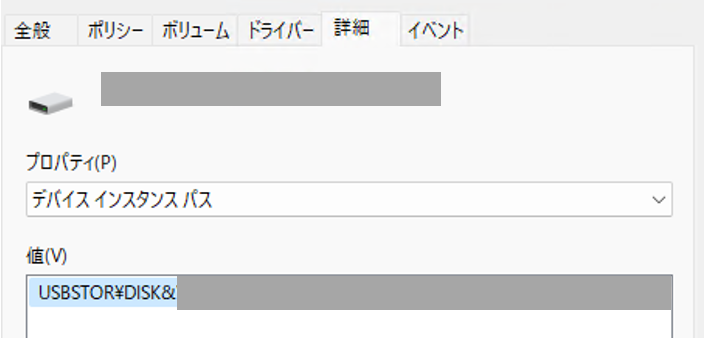
また、Microsoft Defender ポータルの Advanced Hunging で以下のようなクエリを発行することも有効です。
1 | DeviceEvents |
参考情報：デバイス コントロールのチュートリアル | Microsoft Learn
上記のサンプルクエリを実行すると、デバイスに接続されたリムーバブルメディアのクラス名や DeviceId などの情報を取得できるため、アクセス制御ポリシーの設定に役立てることができます。
他にも、シナリオ 1 - カスタムポリシーで既定のアクセス拒否ポリシーを構成する を参考に、PrimaryId に RemovableMediaDevices や WpdDevices、または CdRomDevices などを設定した広範なアクセス拒否ポリシーを一度端末に適用して制御したいメディアへのアクセスをブロックし、そのイベントを確認する方法も有効です。
参考情報：サポート対象のデバイス | Microsoft Learn
このクエリを使用してアクセス拒否ポリシーによりメディアへのアクセスがブロックされた際の RemovableStoragePolicyTriggered イベントを参照すると、デバイスインスタンスパスや Vendor/Product ID など、アクセス制御ポリシーで明示的にデバイスを指定する際に使用できる様々な情報を参照できます。
参考情報：手順 1: リムーバブル メディアをすべて拒否する | Microsoft Learn
既定の処理を拒否に設定すると読み取り許可のアクセス制御ポリシーが動作しなくなるのはなぜですか？
デバイスコントロール機能が有効な環境で既定の処理が [拒否] に設定されている場合、明示的にポリシーで許可されていない限り、すべてのリムーバブルメディアやプリンターへのアクセスは拒否されます。
参考情報：Device control policies in Microsoft Defender for Endpoint | Microsoft Learn
この時、ディスクレベルまたはファイルシステムレベルのみを指定してアクセス許可ポリシーを作成する場合、対象メディアへの読み取り、書き込み、または実行が拒否される問題が発生する場合があります。
そのため、既定の処理を [拒否] にしている環境で明示的にリムーバブルメディアへのアクセス許可を構成する場合には、ディスクレベルとファイルシステムレベルの両方のアクセス許可を明示的に指定する必要がある点に注意してください。
例えば、読み取りアクセスのみを許可したい場合は、1+8 で 9 を AccessMask として指定します。
また、すべてのアクセスを許可したい場合には、63 を AccessMask として設定します。
参考情報：Understand mask access (Windows) | Microsoft Learn
まとめ
この記事では、Windows マシンでデバイスコントロール機能のアクセス制御ポリシーを構成する方法についておまとめいたしました。
デバイスコントロール機能に関する最新の情報については公開情報を参照してください。
参考情報：Microsoft Defender for Endpointのデバイス制御 | Microsoft Learn